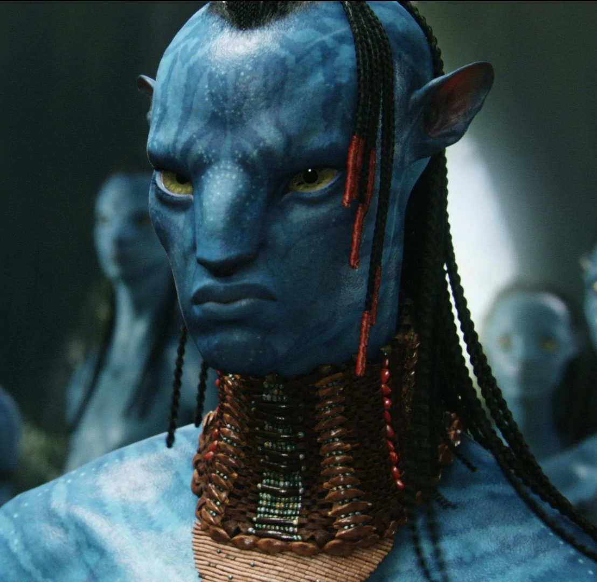

Avatar es una pelicula de ciencia ficción de James Cameron, lanzada en 2009, siendo la más taquillera de la
historia.
Está ambientada en el futuro, donde los humanos han ido a colonizar Pandora, un planeta lejano
con
un mineral muy valioso para los humanos
y con una raza indígena( Na´vi) de lo más peculiar con forma humanoide, con la cual los humanos han
intentado crear vínculos.
Presupuesto: 238 millones de USD
Recaudación: 2922 millones de USD
Duración: 2h 42 minutos
El director de Avatar es James Cameron, director de otras películas, como Titanic, Terminator 2 o Alien.
James Cameron nació un 16 de agosto de 1954, en Ontario, Canadá.
Jake Sully es el protagonista principal, está en silla de ruedas y es uno de los personajes que se transfiere a los avatares.
Neytiry es una indigena del planeta pandora, la cúal conoce a Sully cuando se ha transferido a la forma avatar, hija del lider de los Na´vi.
Coronel de la espedición de los EEUU en pandora. A él solo le interesa el material del planeta, y está dispuesto a todo por el conseguirlo.
Doctora a cargo de las transferencias entre las personas y los avatares, tiene un vinculo previo con os Na´vi..
Hermano de Neytiry y sucesor de jefe del clan Na´vi, tiene roces con Sully.
| Plataforma | Valoración | Precio | Link a la plataforma | |
|---|---|---|---|---|
| Disney+ | --------- | Precio de suscripción | Link | |
| Youtube | Alquilar 3,99€ Comprar 9,99€ | Link | ||
| Prime Video | 7,8 | Alquilar 2,99€ Comprar 8,99€ | Link | |